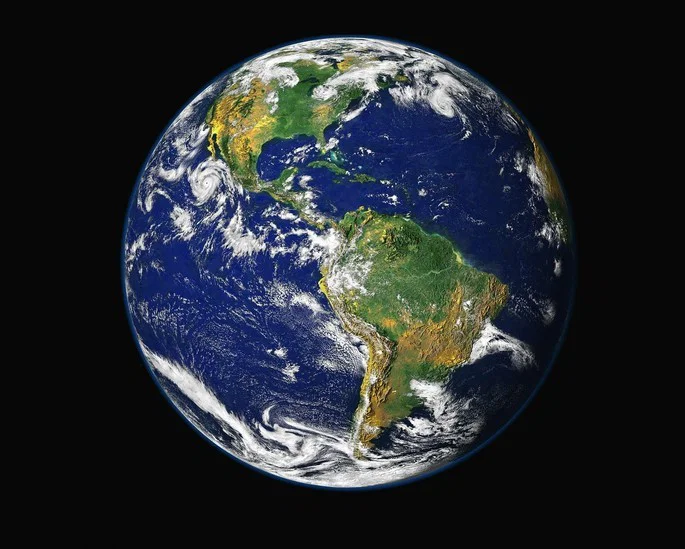
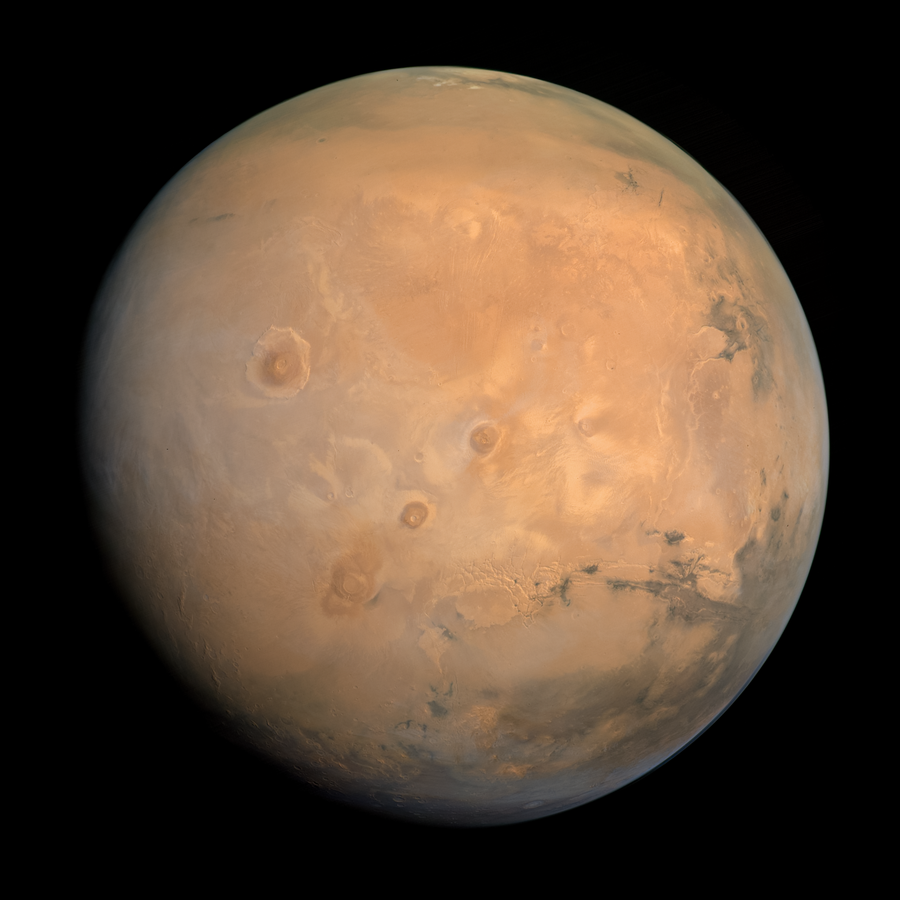
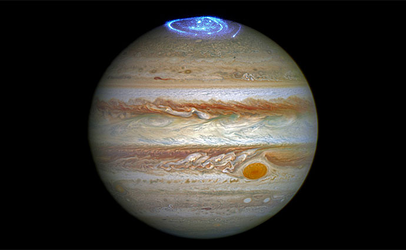
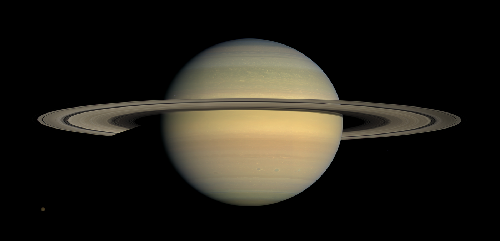

Terra
O único planeta conhecido com vida. Cerca de 70% da superfície é coberta por água.
Conheça os planetas do Sistema Solar, os buracos negros e as descobertas que mudaram a forma como enxergamos o céu.
Explorar agora
Quatro mundos muito diferentes entre si.
O único planeta conhecido com vida. Cerca de 70% da superfície é coberta por água.

O planeta vermelho. Tem o maior vulcão do Sistema Solar, o Monte Olimpo.

O maior de todos. A Grande Mancha Vermelha é uma tempestade que dura séculos.

Famoso pelos anéis feitos de gelo e rocha. Tem mais de 140 luas conhecidas.
Assuntos para ler com calma.
Um buraco negro é uma região do espaço onde a gravidade é tão forte que nem a luz consegue escapar. Eles nascem, em geral, quando estrelas muito grandes chegam ao fim da vida e colapsam.
Conjuntos de bilhões de estrelas. A nossa se chama Via Láctea.
Do Galileu ao James Webb, cada um mostrou um pedaço novo do céu.
Algumas datas que fizeram diferença.
Galileu aponta o telescópio para Júpiter e descobre quatro de suas luas.
Einstein publica a Relatividade Geral, base para entender os buracos negros.
A Apollo 11 leva os primeiros humanos à Lua.
Cientistas divulgam a primeira imagem real de um buraco negro.